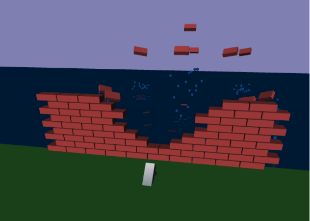

Description:
This program is a simulation where a wall is blown up by a bazooka on one side. The blocks in the wall that are hit by the explosion are rotated, and translated with realistic physics.The explosion is treated as user manipulated cone with variable strength, angle, falloff, etc. Simulation contains a pool of water on the side of the wall opposite the explosion, allowing particle splashes and reflection/ refraction .
User Guide
Using our program is easy! Use the sliders on the bottom of the viewspace to manipulate the angle (the size of the explosion cone), magnitude, source (sX, sY, sZ) and direction (dX, 1, dZ) of the explosion. Once you manipulate the sliders to your hearts content, press play to start the simulation. You can pause the simulation at any time by pressing the play button again. Alternatively, you can drag the slider under the play button to view the simulation frame by frame. You can manipulate the slider values while viewing it either automatically or frame by frame and it will update in real time.
Tech Details
 Here is a link to the project itself! Project